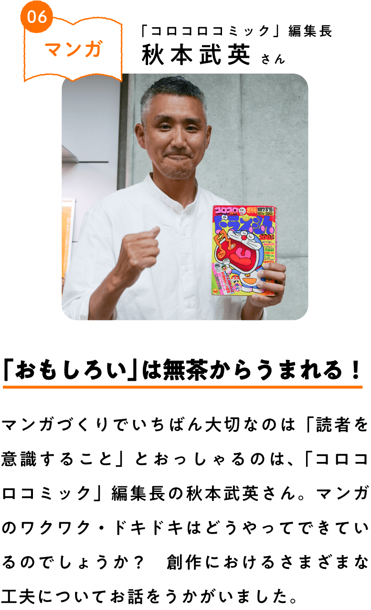
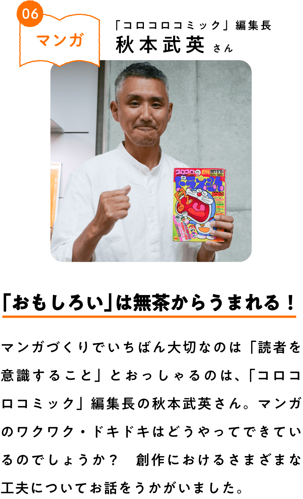

秋本武英（あきもと・たけひで）
1970年広島県に生まれる。小学館入社以来、児童漫画雑誌の編集を務め、「映画ドラえもん」や「ケシカスくん」などを担当。第十代目「コロコロコミック」編集長としての愛称は“秋本じゃけぇ”。


※プロフィール写真で持っているのが、「コロコロコミック」創刊号

でも、マンガの最大の特徴は、一ページ一ページが手描きされた絵画だということです。マンガでは、一ページ一ページの絵画がそれぞれ役割をもっていて、それが集まり、うまく機能することで一話になります。
マンガ家の先生や編集者は、おもしろい一話をつくり上げるためにさまざまな工夫をしています。
いちばん大切なのは、読者を意識すること。たとえば、マンガはたくさんのコマでできていますが、よく見てみるといろんなタイプのコマがあることに気がつくと思います。
じつは、「コロコロコミック」が創刊されたころ（1977年）のマンガは同じサイズの四角のコマが順番に並んでいるようなスタイルでしたが、いまは形や大きさなども完全に自由。たとえば、迫力を示したいシーンであれば「見開き」や「断ち切り」という手法を使ったり、ちょっと緊張感を演出したいときにはコマを斜めに切ったりというようにさまざまな手法がとられます。
「見開き」の例。2ページにわたる描写が大きなインパクトをあたえる。
「断ち切り」の例。紙いっぱいに（余白まで）描くことで、読者の目を引くことができる。
もうひとつ重要なのが、「めくり」と呼ばれるページをめくる動作に関することです。マンガでは、ページをめくった後に読者を驚かすことができるよう、「次に何が起こるのかな」というドキドキを直前までつくり上げていきます。そして、ページをめくると同時に必殺技やすごい魔法、ギャグなどで、読者の期待に応えていくわけです。このように、読者の目や手、心の動きをイメージしながらひとつひとつのページを考えていくのがマンガづくりといえます。
と、こんなにふうに言葉で説明するのは簡単なのですが、マンガ家の先生はこれらを一枚一枚絵に落とし込んでいくわけですから、すごいとしか言いようがありません！ 編集者はそれをサポートする役割ですが、マンガづくりはなかなか順調にいかないこともあります。ここまでは来られたのに、最後のオチだけわからないってこともある（笑）。そうすると、先生と編集者で、ああでもない、こうでもないって言いながら悩むわけです。
でも、おもしろいものって、無茶なことから生まれるんですよね。とんでもなく強い敵を先生が描いて、あまりの強さに「先生、これどうやって倒すんですか？」と聞くと、先生のほうも、「わかりません」って（笑）。でも、この瞬間こそがマンガがおもしろくなるチャンスなんですよ。「こうやったら倒せませんかね」「それだとダメなので、こうやるのはどうか」と知恵を出し合う。このやりとりを何度も繰り返して、一筋の光が見えたときは、ぜったいおもしろいものになります。当たり前のところに落ち着かないからこそマンガは楽しいし、「コロコロコミック」もそうありたいと思っています。
最後になりますが、マンガ雑誌って、単行本と違っていろいろな作品が一話ずつ載っていますよね。そこに連載しているマンガ家の先生は、自分の作品がその雑誌でいちばんおもしろいものでありたいと思いながら毎号取り組んでいます。他の作品と競い合っているわけですね。すごい才能をもったマンガ家が必死に一話一話つくり上げているわけですから、それがまとめられた単行本がおもしろくないわけがない！ これは自信をもって言えます。マンガには、作者のこだわりがあらゆるところにちりばめられています。それを自分なりに探しながら読み進めてみると、これまでよりももっと楽しく読めるんじゃないかな。

質問：おもしろい推せん文を書くためのコツはありますか。
秋本さんの答え：編集者の仕事のひとつに、本の帯の言葉を考えるというものがあります。帯には、作品の魅力がぎゅっと凝縮された推せん文が書かれていますので、本屋さんに行ったら参考にしてみてください。私のおすすめは、意外な言葉を織り交ぜること。普段はいっしょに使わないような言葉と言葉を組み合わせたりすると、その意外性が受け手の好奇心をくすぐることがありますよ。ぜひ、いろいろと試してみてください。
質問：将来マンガ家になるためには、何をしておくとよいでしょうか。
秋本さんの答え：もちろん絵の練習はたくさんやらなければいけませんが、科学や歴史などあらゆる知識が財産となります。がんばって勉強したことは必ず武器になります。さらに、マンガはキャラクターの語りによってできているので、作者は人の心の動きがよくわかる人でないと務まりません。ですので、本を読むときも、テレビや映画を観るときも、どうしてこの人はこうしたのだろうと考えるようにしておくとよいと思います。